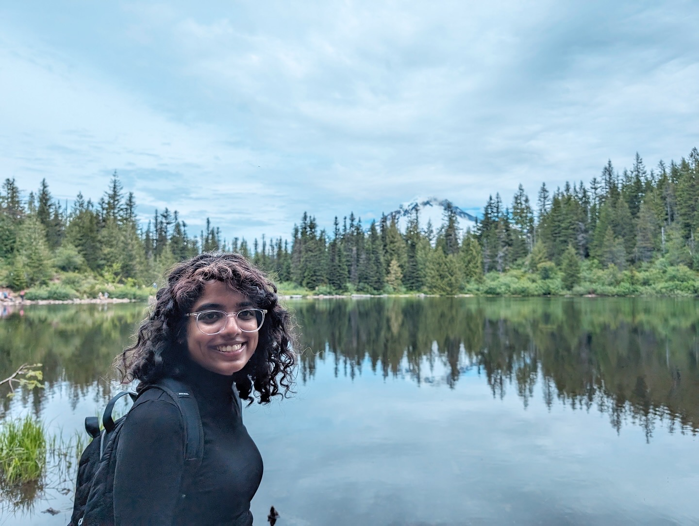
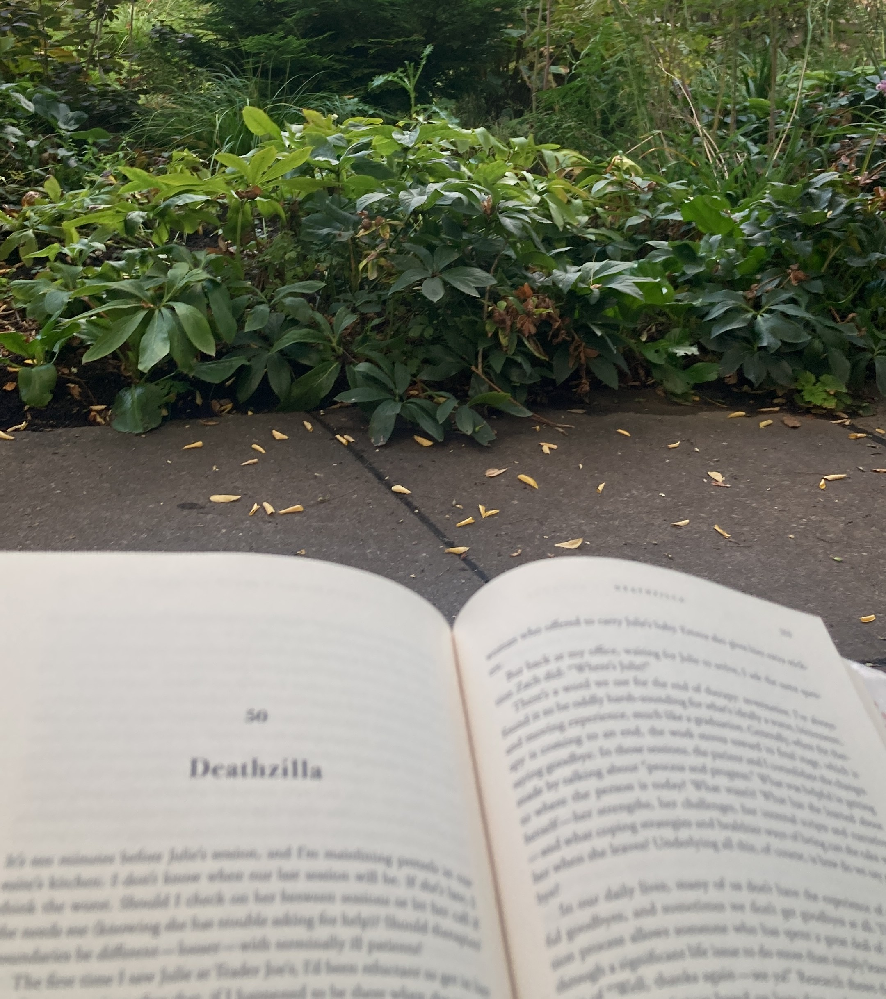

Brunda Marpadaga

When I'm not tinkering with hardware, I spend my time outdoors and with books. I love hiking in the Pacific Northwest and reading memoirs that explore identity, resilience, and personal growth.

Exploring trails and nature

Reading memoirs & reflective writing
The Pacific Northwest offers incredible hiking opportunities, from coastal trails to mountain peaks. Some of my favorite spots include the Columbia River Gorge, Mount Hood, and the Oregon Coast. There's something about being in nature that helps me think more clearly and approach engineering challenges with fresh perspectives.
I'm drawn to memoirs and personal narratives that explore themes of identity, resilience, and growth. These stories remind me that life is about more than technical achievements— it's about understanding ourselves and connecting with others.
Some books that have influenced my thinking include works that examine cultural identity, personal transformation, and the intersection of technology with human experience. Check out my Goodreads page to see what I'm currently reading!